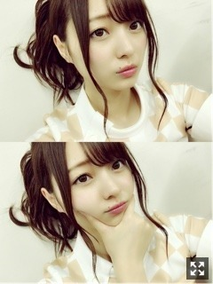
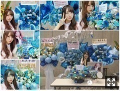
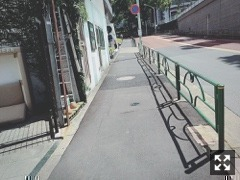
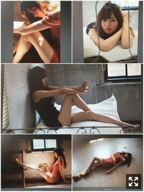
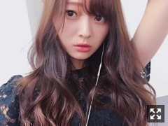

秋のにおい〜。梅澤美波
みなさまこんにちは！！
乃木坂46 ３期生の
梅澤美波です！！
(今日長いですごめんなさい、
気が向いたら見てね

髪の毛結んでるんじゃなくて
壁に押し当ててるんだよすごいでしょ
涼しくなって大好きな気温になって
お散歩が楽しい時期になった☺︎
秋服買いに行きたいなあ〜
と思いつつ
まだ着ていない夏服が眠っているんです、、
困った( .. )
今年はどんなコート買おうかな〜と考え中、、☺︎最高に楽しい
この間のスペイベ！
ありがとうございました☺︎
ボウリング！６年ぶりぐらい！
２回スペアしたけどあとはガーター！
足引っ張ってごめんね！
みんなもあんまり上手じゃなかったけどね( ˙-˙ )౨（笑）
でもあんなに長く話せて
距離も近くて、なんかいつもと違ってよきでした！！
せっかくのスペイベなのに
お休みの方がいたのは寂しかったよ〜
ファンの方と、白石さん、星野さん、川村さん、私
の４人とで席を囲ってクイズ！
楽しすぎました〜新鮮だった！！
また今週末あるからよろしく頼みます！☺︎
盛り上がりがすごくてテンションマックスだったよ〜
裏で出番じゃない曲も
みんなで踊ってた( ¨̮ )（笑）
そして昨日の全握！
まさかの梅桃ペア！
まさか叶うとは、、嬉しきでした( .. )
梅桃すき〜って方が多いから
それも嬉しかったなあ、、
ももこは相変わらずな自由人だけど
初めてこんなにわちゃわちゃで
楽しめました、来てくださった方ありがとう◎

お花も今回もたくさん、、幸せ者です。
ありがとう〜みんなセンス良いなあ
可愛くてレーン行くと気分あがるの( ¨̮ )
物凄くたくさんの方が来てくださって
とても嬉しかったです！
並ぶの大変だよね、いつもありがとう( .. )
ほんのちょっとしたきっかけだったり
そういうので初めて来て下さる方もいて
物凄く嬉しいです、また会いに来てほしいなあ
いつもの方もありがとう、今回も支えられてると感じた握手会でした( ¨̮ )
18日は久しぶりの個握！
よろしく頼みます！
そして
３期生が加入して
１年が経ちました！

１年前の乃木坂46になった日、
９月４日に撮った写真☺︎
オーディション向かう最中かな
きっと受かると思ってなかった当時の私は
なにかの思い出にって必死にカメラを構えたんだと思います、（笑）
アイドル歴１年になりました。
もう１年、まだ１年、
どっちにも捉えることができる
濃い１年でした！人生で１番！
本当に人見知りだし人の前に出るとか無理だった中学高校生の頃の私からしたら
ステージに立って歌って踊って
何万人もの方の前で喋って
舞台の上で演技をして、
今や大好きな撮影をして、、
あの頃の私が見たら、よく出来てるなあって思うだろうなあ（笑）
すごい楽しいの！
一年前の当時の私からしたら考えられないくらいの感覚！
風のように去っていった１年、
本当にたくさんの経験をさせて頂けて
いろんな方に出逢って
恵まれている環境にいること、
本当にありがたく思います。
"アイドル"っていう響きに
まだ違和感を感じることもあります
でも、アイドルの形って
人それぞれなんだなって、
自分が実際に活動してみて思ったの。☺︎
自分はこうあるべきなんだ とか
飾りすぎず、作らず、
そのままでいいんだよって
ファンの方や周りの支えて下さる方に教えていただいたりもしたの☺︎
この考えを持って、
少し気分が楽になったりもしたの☺︎
そして、皆様に☺︎
３期生として加入した私達を
受け入れてくださってありがとうございます。
２期生さんが加入して４年ほど経っていて
乃木坂46はもう出来上がっていて
確立してて
物凄い勢いで登っていて
先輩方同士の絆っていうものも出来上がっていて
そこへの３期生加入。
きっと反対派だった人も多かったかと思います。もちろん今もそういう方もいると思います。
もし私がファンの皆様の立場だったら
３期生をどう見ていたか分かりません。
もしかしたら受け入れていなかったかもしれない、大好きなグループが変わっていってしまうんじゃないかって思うからです。( .. )
でも、私達は未来の乃木坂46に
今まで１年頑張ってきました。☺︎
そんな中、受け入れてくださるファンの皆様の存在は物凄く大きくて、どんなときも支えになっていました！
本当にありがとう！
アイドル人生が始まって
初めて自分を応援して下さるファンの方に出逢って
初めて握手会でお会いして、
お話をして泣いてしまったこともある、
それくらい大きい皆様の存在！
自分を応援してくださっているって
すごい不思議な感覚です。
会いに来てくれたりコメントで元気をくれたり、雑誌に載ればチェックしてくれたりテレビに出演したら見てくれたり
皆様の人生の一欠片にでも私がいることが不思議で仕方がない！
時間をかけて、会いに来てくれて
そんな方々に出逢えた事だけで乃木坂入ってよかったって思えるくらいの存在！
私なんかについてきてくれてありがとう！
会いに来てくれてありがとう！
遠くてなかなか来れないって方も、推してくれていてありがとう！
本当にたくさんありがとう！
私はなにか返せているのかな〜( .. )不安です
私を推していると
悔しい気持ちとかさせちゃうこと、あるのかな？あると思うの、でも
私は私なりに頑張りたいですこれからも！
ずっと飽きるまで
そばにいて欲しいです、、
欲張りでごめんね( .. )
きっとみんな
すぐよそ見したりすると思うんだけど
そんなときはまた戻ってきてくれるように
力をもっとつけるから
ファンの方あっての私です、
皆様がいないと何も出来ない私です、
私をアイドルとして育ててください☺︎
寿命が長いお仕事ではないと思うので
だから、自分がアイドルとして力尽きるまで
この場所で頑張りたいとおもう！
間違いなく今まで生きてきた中でも
これから生きていく中でも
私の人生の１番のターニングポイントである今
将来の私があの頃は輝いてたなって自分で言えるくらい
キラキラしたい！
がんばります！
なにより１１人に出逢えて良かった〜。
言葉で表すのは難しい関係だからこそ
物凄く大切な存在だなあと思う！
普通に暮らしていたら
絶対に絶対に出逢えない集まれない１２人
すごく奇跡のような事よね☺︎
大切だし、守りたいって思う！
これって凄いことだと思う！
この１２人で加入できて幸せ！
アイドル２年目も全力です！
がんばります！

ヤングガンガンさまオフショット！！
(枚数の都合上、見にくくてごめんなさい、、
とりあえず衣装がどれもどタイプ！
とても可愛かったの〜( ¨̮ )
ヤングガンガン良かったよ！
と物凄くたくさんの方から言っていただけて
皆様にも気に入って頂けたかなあと。☺︎
また出させていただけるようにがんばります！
告知◎
▽９／１５ AKB新聞 さま
若様軍団で取材していただきました！軍団での取材は初めてでした☺︎"若様軍団"と彫ってあるナイフをいただきました、、感動(；＿；)感動のお話もあるのでぜひ！
９／２０ 横浜ウォーカー さま
こちら私オススメのラーメン屋さんにお邪魔してきました！久しぶりに食べて改めて美味しさに感動、、皆様にも食べてほしい！ぜひチェックお願い致します☺︎
９／２９ 平塚ウォーカー さま
こちら創刊号です！まさかの地元関係のお仕事、、夢の一つだったので物凄く嬉しいんです(；＿；)かなり内ネタ地元トークを久しぶりにできて物凄く楽しかったです！こちらもチェックよろしく頼みます！
▽９／２４ SamuraiELO さま
美女散歩連載
▽19th 個別握手会！
１／２１ ポートメッセなごや
１／２８ 東京ビッグサイト
２／３ 東京ビッグサイト
２／２５ パシフィコ横浜
３／１７ 東京ビッグサイト
３／２１ 京都パルスプラザ
すっかり２０１８年です！
なんと５部制になったので、、(；＿；)
不安ですが皆様に楽しんで帰っていただけるよう私自身も最高に楽しい握手会にしたいと思っておる☺︎◎
だいぶ先の話だから
どうしようって方多いと思うけど
私はまってんで〜( ˙-˙ )౨（笑）
最近来なくて寂しい方もいる、
いつもの方はもちろん来て欲しいし
少しでも気になってる、まだ来たことない方も
ぜひ来て欲しいなあ待ってるよ☺︎
若様軍団が19枚目で曲をいただけることになりました！
『失恋お掃除人』です☺︎
驚きのスピードで私自身も聞いた時はかなりびっくりしました、、
物凄く嬉しかった、、！！
曲やMVのこと、まだ詳しく言えないので
解禁され次第また触れますね( ¨̮ )
早く聞いてほしいなあ〜
若月さんをもっともっと好きになっていく日々！尊敬します！あの人柄に本当に憧れます、癒されます、心が本当に綺麗な方なんだなあと常々思う、、
軍団員のみづきとたまみとは
なんだかんだ自然と３人揃うことがよくあります( ¨̮ )一緒にいて楽ちん
素敵な人に囲まれすぎてる〜
刺激を受ける毎日〜
私もそんな人になりたい〜
MCやらせていただくことが多いけど
だけどもっと頑張りたいから
最近はラジオを今まで以上に聴くようになった
お話が上手くなりたい！
ラジオしたいなあ）Oo｡.（´-`）
冬が恋しいすぎて冬の曲ずっと聴いてる！
なんでだろう冬って意味分かんないくらいドキドキワクワクする！
雰囲気がすき！服が好き！匂いが好き！気温が好き！全部好き！

ブレブレ〜
学校、お仕事、バイト、
みんながんばろな〜
夢で逢おうな〜（笑）
おやすみ
楽しいことは楽しいだけど、苦しいことがあるとそっちが目立つ
そういうものだと思う、けど、こんなのも人生のちっぽけな１部なんだって思うと軽くなるきもち☺︎
少しずつポジティブな考えを持てたらいいなと思う！がんばる！がんばろな〜
Original：https://www.nogizaka46.com/s/n46/diary/detail/40617?ima=0522&cd=MEMBER